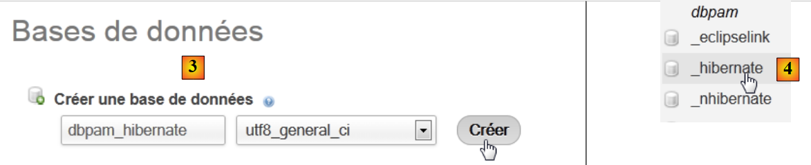
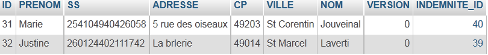
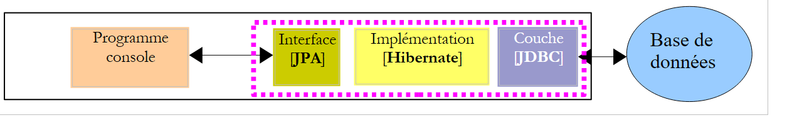
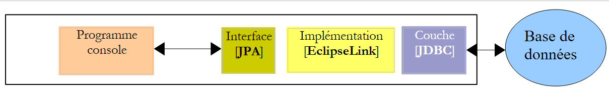
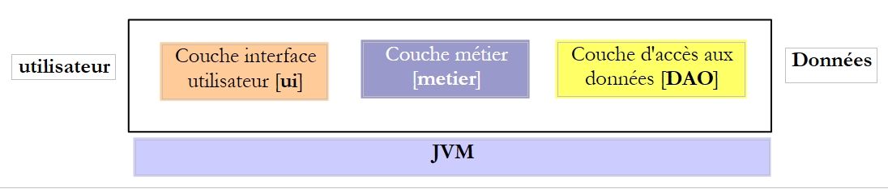
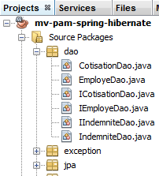
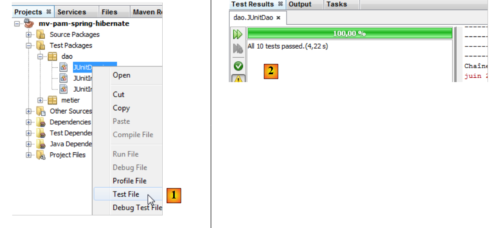
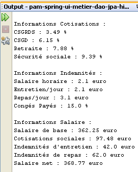
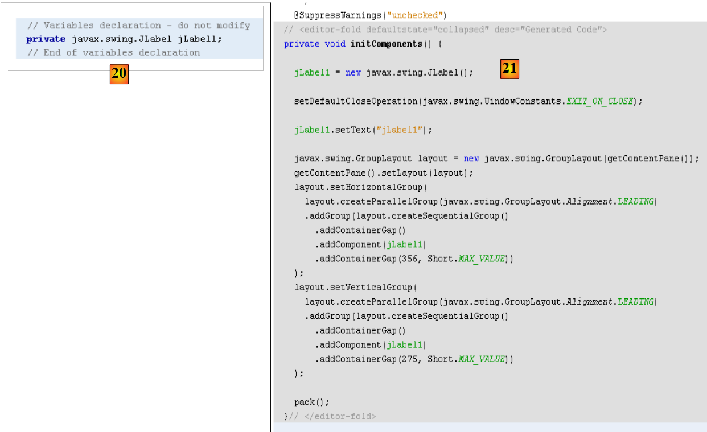
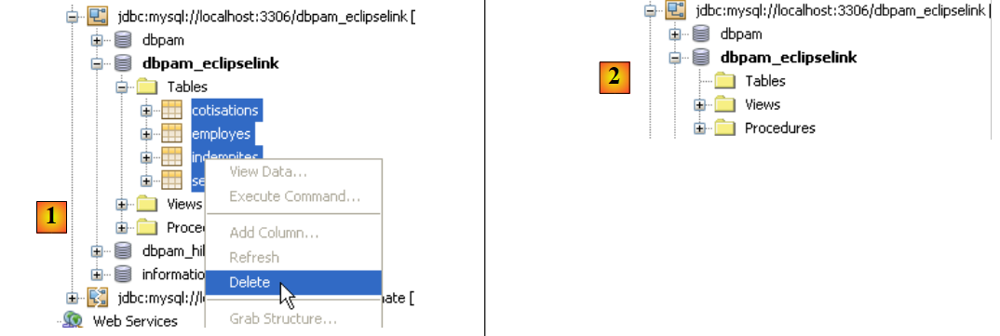

5. Version 1: Arquitectura Spring / JPA
Nos proponemos escribir una aplicación de consola, así como una aplicación gráfica que permita elaborar la nómina de las cuidadoras infantiles empleadas por la «Casa de la Primera Infancia» de un municipio. Esta aplicación tendrá la siguiente arquitectura:
 |
5.1. BDLa base de datos
Los datos estáticos necesarios para elaborar la nómina se almacenarán en una base de datos que denominaremos a partir de ahora «dbpam». Esta base de datos podría contener las siguientes tablas:
Estructura:
clave primaria | |
n.º de version – aumenta con cada modificación de la línea | |
Número de la Seguridad Social del empleado: único | |
apellido del empleado | |
su nombre | |
su dirección | |
su ciudad | |
su código postal | |
clave externa en el campo [ID] de la tabla [INDEMNITES] |
Su contenido podría ser el siguiente:

Estructura:
clave primaria | |
N.º de version – aumenta con cada modificación de la línea | |
porcentaje: contribución social generalizada + contribución al reembolso de la deuda social | |
porcentaje: contribución social generalizada deducible | |
porcentaje: seguridad social, viudedad, vejez | |
porcentaje: pensión complementaria + seguro de desempleo |
Su contenido podría ser el siguiente:

Las tasas de las cotizaciones sociales son independientes del empleado. La tabla anterior solo tiene una línea.
clave primaria | ||
N.º de version – aumenta con cada modificación de la línea | ||
Índice de procesamiento - único | ||
Precio net en euros por una hora de guardia | ||
indemnización de manutención en euros por día de cuidado | ||
indemnización por comida en euros por día de servicio | ||
Indemnización por vacaciones pagadas. Se trata de un porcentaje que se aplica al salario base. | ||
Su contenido podría ser el siguiente:

Cabe señalar que las indemnizaciones pueden variar de una cuidadora a otra. De hecho, están asociadas a una cuidadora concreta a través de su índice salarial. Así, la Sra. Marie Jouveinal, que tiene un índice salarial de 2 (tabla EMPLOYES), tiene un salario por hora de 2,1 euros (tabla INDEMNITES).
5.2. Método de cálculo del salario de una cuidadora infantil
A continuación, presentamos el método de cálculo del salario mensual de una asistente maternal. No pretende ser el que se utiliza en la realidad. Tomamos como ejemplo el salario de la Sra. Marie Jouveinal, que ha trabajado 150 horas en 20 días durante el mes a pagar.
Se tienen en cuenta los siguientes elementos: | | |
El salario base de la cuidadora se calcula mediante la siguiente fórmula: | ||
Una serie de prestaciones sociales deben deducirse de este salario base: | | |
Total de cotizaciones sociales: | ||
Por otra parte, la cuidadora tiene derecho, por cada día trabajado, a una indemnización por gastos de manutención y a una indemnización por comida. En este concepto, recibe las siguientes indemnizaciones: | | |
En definitiva, el salario net que se debe pagar a la cuidadora es el siguiente: |
5.3. Funcionamiento de la aplicación de consola
A continuación se muestra un ejemplo de ejecución de la aplicación de consola en una ventana de DOS:
Escribiremos un programa que recibirá la siguiente información:
- N.º de la Seguridad Social de la cuidadora (254104940426058 en el ejemplo - línea 1)
- número total de horas trabajadas (150 en el ejemplo - línea 1)
- número total de días trabajados (20 en el ejemplo - línea 1)
Vemos que:
- líneas 9-14: muestran la información relativa al empleado cuyo número de la Seguridad Social se ha facilitado
- líneas 17-20: muestran las tasas de los diferentes cotisations
- líneas 23-26: muestran las indemnizaciones asociadas al índice salarial del empleado (en este caso, el índice 2)
- líneas 29-33: muestran los componentes del salario a pagar
La aplicación señala los posibles errores:
Llamada sin parámetros:
dos>java -jar pam-spring-ui-metier-dao-jpa-eclipselink.jar
Syntaxe : pg num_securite_sociale nb_heures_travaillées nb_jours_travaillés
Llamada con datos erróneos:
dos>java -jar pam-spring-ui-metier-dao-jpa-eclipselink.jar 254104940426058 150x 20x
Le nombre d'heures travaillées [150x] est erroné
Le nombre de jours travaillés [20x] est erroné
Llamada con un número de la Seguridad Social erróneo:
dos>java -jar pam-spring-ui-metier-dao-jpa-eclipselink.jar xx 150 20
L'erreur suivante s'est produite : L'employé de n°[xx] est introuvable
5.4. Funcionamiento de la aplicación gráfica
La aplicación gráfica permite calcular los salarios de las cuidadoras infantiles a través de un formulario Swing:
 |
- la información que se pasaba como parámetros al programa de consola ahora se introduce mediante los campos de entrada [1, 2, 3].
- El botón [4] solicita el cálculo del salario
- El formulario muestra los diferentes elementos del salario hasta el salario net a pagar [5]
La lista desplegable [1, 6] no muestra los números SS de los empleados, sino sus nombres y apellidos. Se parte de la hipótesis de que no hay dos empleados con el mismo nombre y apellidos.
5.5. Creación de la base de datos
Ejecutamos WampServer y utilizamos la herramienta PhpMyAdmin [1]:
 |
- en [2], tomamos option [Bases de données],
 |
- en [3], creamos una base de datos [dbpam_hibernate],
- en [4], la base creada. La seleccionamos,
 |
- en [5], queremos importar un script SQL,
- en [6], se utiliza el botón [Parcourir] para seleccionar el archivo,
 |
- en [7,8], seleccionamos el script SQL,
- en [9], se ejecuta,
 |
- en [10], se han creado las tablas. Su contenido es el siguiente:
tabla EMPLOYES

tabla INDEMNITES

tabla COTISATIONS

5.6. Implementación JPA
5.6.1. Capa JPA / Hibernate
Vamos a configurar la capa JPA en el siguiente entorno:
 |
Un programa de consola trabajará con la base de datos. Para ello, es necesario:
- disponer de una base de datos,
- tener el controlador JDBC del SGBD, aquí MySQL,
- implementar la capa JPA con Hibernate,
- escribir el programa de consola.
Creamos el proyecto Maven [mv-pam-jpa-hibernate] [1]:
 |
En la arquitectura de nuestra aplicación necesitamos los siguientes elementos:
- la base de datos,
- el controlador JDBC de SGBD MySQL,
- la capa JPA / Hibernate (entidades y configuración),
- el programa de consola de pruebas.
5.6.1.1. La base de datos
En primer lugar, creemos la base de datos vacía. Ejecutamos WampServer y utilizamos la herramienta PhpMyAdmin [1]:
 |
- en [2], tomamos option [Bases de données],
 |
- en [3], se crea una base de datos [dbpam_hibernate],
- en [4], la base creada.
5.6.1.2. Configuración de la capa JPA
La conexión entre la capa JDBC y la base de datos se realiza en el archivo [persistence.xml], que configura la capa JPA. Este archivo se puede crear con Netbeans:
 |
- en la pestaña [services] [1], se conecta a la base de datos con el controlador JDBC de MySQL [2],
- en [3], el nombre de la base de datos a la que se desea conectarse.
- en [4], el nombre de la base de datos,
- en [5], nos conectamos como root sin contraseña,
- en [6], se puede probar la conexión,
- en [7], la conexión se ha realizado correctamente.
 |
- la conexión aparece en [8] y en [9],
- en [10], se añade un nuevo elemento al proyecto,
 |
- en [11] se elige la categoría [Persistence] y en [12] el elemento [Persistence Unit],
- en [13], se le da un nombre a esta unidad de persistencia,
- en [14], se elige una implementación de Hibernate,
- en [15], se designa la conexión que acabamos de crear con la base de datos MySQL,
- en [16], se indica que, al instanciar la capa JPA, esta debe crear las tablas correspondientes a las entidades JPA del proyecto.
Al finalizar el asistente se genera el archivo [persistence.xml]:
 |
- el archivo aparece en una nueva rama del proyecto, en una carpeta [META-INF] [1],
- que corresponde a la carpeta [src/main/resources] del proyecto [2,3].
Su contenido es el siguiente:
<?xml version="1.0" encoding="UTF-8"?>
<persistence version="2.0" xmlns="http://java.sun.com/xml/ns/persistence" xmlns:xsi="http://www.w3.org/2001/XMLSchema-instance" xsi:schemaLocation="http://java.sun.com/xml/ns/persistence http://java.sun.com/xml/ns/persistence/persistence_2_0.xsd">
<persistence-unit name="mv-pam-jpa-hibernatePU" transaction-type="RESOURCE_LOCAL">
<provider>org.hibernate.ejb.HibernatePersistence</provider>
<properties>
<property name="javax.persistence.jdbc.url" value="jdbc:mysql://localhost:3306/dbpam_hibernate"/>
<property name="javax.persistence.jdbc.password" value=""/>
<property name="javax.persistence.jdbc.driver" value="com.mysql.jdbc.Driver"/>
<property name="javax.persistence.jdbc.user" value="root"/>
<property name="hibernate.cache.provider_class" value="org.hibernate.cache.NoCacheProvider"/>
<property name="hibernate.hbm2ddl.auto" value="create-drop"/>
</properties>
</persistence-unit>
</persistence>
- línea 3: el nombre de la unidad de persistencia y el tipo de transacciones. RESOURCE_LOCAL indica que el proyecto gestiona las transacciones por sí mismo. En este caso, será el programa de consola el que deba hacerlo,
- línea 4: la implementación JPA utilizada es Hibernate,
- líneas 6-9: las características de la conexión a la base de datos,
- línea 11: solicita la creación de las tablas correspondientes a las entidades JPA. De hecho, Netbeans genera aquí una configuración errónea. La configuración debe ser la siguiente:
<property name="hibernate.hbm2ddl.auto" value="create"/>
Con el option create, Hibernate, al instanciar la capa JPA, elimina y luego crea las tablas correspondientes a las entidades JPA. La propiedad option create-drop hace lo mismo, pero al final del ciclo de vida de la capa JPA, elimina todas las tablas. Existe otra propiedad option:
<property name="hibernate.hbm2ddl.auto" value="update"/>
Esta option crea las tablas si no existen, pero no las elimina si ya existen.
Añadiremos otras tres propiedades a la configuración de Hibernate:
<property name="hibernate.show_sql" value="true"/>
<property name="hibernate.format_sql" value="true"/>
<property name="use_sql_comments" value="true"/>
Solicitan a Hibernate que muestre las órdenes SQL que envía a la base de datos. El archivo completo es, por lo tanto, el siguiente:
<?xml version="1.0" encoding="UTF-8"?>
<persistence version="2.0" xmlns="http://java.sun.com/xml/ns/persistence" xmlns:xsi="http://www.w3.org/2001/XMLSchema-instance" xsi:schemaLocation="http://java.sun.com/xml/ns/persistence http://java.sun.com/xml/ns/persistence/persistence_2_0.xsd">
<persistence-unit name="mv-pam-jpa-hibernatePU" transaction-type="RESOURCE_LOCAL">
<provider>org.hibernate.ejb.HibernatePersistence</provider>
<class>jpa.Cotisation</class>
<class>jpa.Employe</class>
<class>jpa.Indemnite</class>
<properties>
<property name="javax.persistence.jdbc.url" value="jdbc:mysql://localhost:3306/dbpam_hibernate"/>
<property name="javax.persistence.jdbc.password" value=""/>
<property name="javax.persistence.jdbc.driver" value="com.mysql.jdbc.Driver"/>
<property name="javax.persistence.jdbc.user" value="root"/>
<property name="hibernate.cache.provider_class" value="org.hibernate.cache.NoCacheProvider"/>
<property name="hibernate.hbm2ddl.auto" value="create"/>
<property name="hibernate.show_sql" value="true"/>
<property name="hibernate.format_sql" value="true"/>
<property name="use_sql_comments" value="true"/>
</properties>
</persistence-unit>
</persistence>
5.6.1.3. Las dependencias
Volvamos a la arquitectura del proyecto:
 |
Hemos configurado la capa JPA mediante el archivo [persistence.xml]. La implementación elegida ha sido Hibernate. Esto ha introducido dependencias en el proyecto:
 |
Estas dependencias se deben a la inclusión de Hibernate en el proyecto. Tenemos que añadir otra dependencia, la del controlador JDBC de MySQL, que implementa la capa JDBC de la arquitectura. Modificamos el archivo [pom.xml] de la siguiente manera:
<dependencies>
<dependency>
<groupId>junit</groupId>
<artifactId>junit</artifactId>
<version>3.8.1</version>
<scope>test</scope>
</dependency>
<dependency>
<groupId>mysql</groupId>
<artifactId>mysql-connector-java</artifactId>
<version>5.1.6</version>
</dependency>
<dependency>
<groupId>org.hibernate</groupId>
<artifactId>hibernate-entitymanager</artifactId>
<version>4.1.2</version>
</dependency>
...
<dependency>
<groupId>org.hibernate.common</groupId>
<artifactId>hibernate-commons-annotations</artifactId>
<version>4.0.1.Final</version>
</dependency>
</dependencies>
Las líneas 8-12 añaden la dependencia del controlador JDBC de MySQL.
5.6.1.4. Las entidades JPA
 |
Pregunta: Siguiendo los pasos del ejemplo del apartado 4.4, genere las entidades [Cotisation, Indemnite, Employe].
Notas:
- las entidades formarán parte de un paquete denominado [jpa],
- cada entidad tendrá un número de version,
- si dos entidades están vinculadas por una relación, solo se creará la relación principal @ManyToOne. La relación inversa @OneToMany no se creará.
5.6.1.5. El código de la clase principal
Incluimos en el proyecto las entidades JPA desarrolladas anteriormente [1]:
 |
luego añadimos [2], la siguiente clase [main.Main]:
package main;
import javax.persistence.EntityManager;
import javax.persistence.EntityManagerFactory;
import javax.persistence.Persistence;
public class Main {
public static void main(String[] args) {
// crear el Gestor de Entidades es suficiente para construir la capa JPA
EntityManagerFactory emf = Persistence.createEntityManagerFactory("mv-pam-jpa-hibernatePU");
EntityManager em=emf.createEntityManager();
// liberación de recursos
em.close();
emf.close();
}
}
- línea 10: se crea el EntityManagerFactory de la unidad de persistencia denominada [mv-pam-jpa-hibernatePU]. Este nombre proviene del archivo [persistence.xml]:
<persistence-unit name="mv-pam-jpa-hibernatePU" transaction-type="RESOURCE_LOCAL">
...
</persistence-unit>
- línea 12: se crea EntityManager. Esta creación genera la capa JPA. Se ejecutará el archivo [persistence.xml] y, por lo tanto, se crearán las tablas de la base de datos,
- líneas 14-15: se liberan los recursos.
5.6.1.6. Pruebas
Volvamos a la arquitectura de nuestro proyecto:
 |
Se han implementado todas las capas. Se ejecuta el proyecto [2].
 |
Los resultados de la consola son los siguientes:
1 2 3 4 5 6 7 8 9 10 11 12 13 14 15 16 17 18 19 20 21 22 23 24 25 26 27 28 29 30 31 32 33 34 35 36 37 38 39 40 41 42 43 44 45 46 47 48 49 50 51 52 53 54 55 56 57 58 59 60 61 62 63 64 65 66 67 68 69 70 71 72 73 74 75 76 77 78 79 80 81 82 83 84 85 86 87 88 89 90 91 92 93 94 95 96 97 98 99 100 101 102 103 104 105 | |
En la consola solo se encuentran registros de Hibernate, ya que el programa ejecutado no hace nada más que instanciar la capa JPA. Cabe destacar los siguientes puntos:
- línea 43: Hibernate intenta eliminar la clave externa de la tabla [EMPLOYES],
- líneas 51-55: eliminación de las tres tablas,
- línea 57: creación de la tabla [COTISATIONS],
- línea 67: creación de la tabla [EMPLOYES],
- línea 80: creación de la tabla [INDEMNITES],
- línea 91: creación de la clave externa de la tabla [EMPLOYES].
En Netbeans, se pueden ver las tablas de la conexión creada anteriormente:
 |
Las tablas creadas dependen tanto de la implementación de la capa JPA utilizada como de la SGBD utilizada. Así, una implementación de JPA / EclipseLink con la misma base de datos puede generar tablas diferentes. Esto es lo que vamos a ver ahora.
5.6.2. Capa JPA / EclipseLink
Vamos a crear un nuevo proyecto Maven en el siguiente entorno:
 |
Seguiremos los pasos del párrafo anterior:
- crear una base de datos MySQL [dbpam_eclipselink]. Utilizaremos el script [dbpam_eclipselink.sql] para generarla,
- crearemos el archivo [persistence.xml] del proyecto. Tomaremos la implementación JPA 2.0 EclipseLink,
- añadir en las dependencias generadas la dependencia del controlador JDBC de MySQL,
- añadir las entidades JPA y el programa de consola,
- realizar las pruebas.
El archivo [persistence.xml] será el siguiente:
<?xml version="1.0" encoding="UTF-8"?>
<persistence version="2.0" xmlns="http://java.sun.com/xml/ns/persistence" xmlns:xsi="http://www.w3.org/2001/XMLSchema-instance" xsi:schemaLocation="http://java.sun.com/xml/ns/persistence http://java.sun.com/xml/ns/persistence/persistence_2_0.xsd">
<persistence-unit name="pam-jpa-eclipselinkPU" transaction-type="RESOURCE_LOCAL">
<provider>org.eclipse.persistence.jpa.PersistenceProvider</provider>
<class>jpa.Cotisation</class>
<class>jpa.Employe</class>
<class>jpa.Indemnite</class>
<properties>
<property name="eclipselink.target-database" value="MySQL"/>
<property name="javax.persistence.jdbc.url" value="jdbc:mysql://localhost:3306/dbpam_eclipselink"/>
<property name="javax.persistence.jdbc.password" value=""/>
<property name="javax.persistence.jdbc.driver" value="com.mysql.jdbc.Driver"/>
<property name="javax.persistence.jdbc.user" value="root"/>
<property name="eclipselink.logging.level" value="FINE"/>
<property name="eclipselink.ddl-generation" value="drop-and-create-tables"/>
</properties>
</persistence-unit>
</persistence>
- las propiedades 9-13 han sido generadas por el asistente Netbeans,
- línea 14: esta propiedad nos permite establecer el nivel de registro de EclipseLink. El nivel FINE nos permite conocer las órdenes SQL que EclipseLink emitirá en la base de datos,
- línea 15: al instanciar la capa JPA / EclipseLink, las tablas de las entidades JPA se eliminarán y luego se volverán a crear.
Los resultados de la consola obtenidos son los siguientes:
- líneas 26-30: conexión a la base de datos MySQL,
- líneas 31-34: confirmación de que la conexión se ha realizado correctamente,
- línea 36: eliminación de la clave externa de la tabla [EMPLOYES],
- línea 37: eliminación de la tabla [COTISATIONS],
- línea 38: creación de la tabla [COTISATIONS]. Cabe destacar que la clave primaria ID no tiene el atributo MySQL auto_increment. Esto significa que no es MySQL la que genera los valores de la clave primaria,
- línea 39: eliminación de la tabla [EMPLOYES],
- línea 40: creación de la tabla [EMPLOYES]. Su clave primaria ID no tiene el atributo MySQL auto_increment,
- línea 41: eliminación de la tabla [INDEMNITES],
- línea 42: creación de la tabla [INDEMNITES]. Su clave primaria ID no tiene el atributo MySQL auto_increment,
- línea 43: creación de la clave externa de la tabla [EMPLOYES] hacia la tabla [INDEMNITES],
- línea 44: creación de una tabla [SEQUENCE]. Se utilizará para generar las claves primarias de las tres tablas anteriores,
- línea 47: se produce una excepción porque esta tabla ya existía,
- líneas 51-53: inicialización de la tabla [SEQUENCE].
La existencia de las tablas generadas se puede comprobar en Netbeans [1]:
 |
Por lo tanto, a partir de las mismas entidades JPA, las implementaciones JPA de Hibernate y EclipseLink no generan las mismas tablas. En el resto del documento, cuando la implementación JPA utilizada sea:
- Hibernate, se utilizará la base de datos [dbpam_hibernate],
- EclipseLink, se utilizará la base de datos [dbpam_eclipselink].
5.6.3. Tareas pendientes
Siguiendo el mismo procedimiento que anteriormente,
- crea y prueba un proyecto [mv-pam-jpa-hibernate-oracle] utilizando una implementación JPA de Hibernate y una SGBD de Oracle,
- crear y probar un proyecto [mv-pam-jpa-hibernate-mssql] utilizando una implementación JPA de Hibernate y un servidor SGBD SQL,
- crear y probar un proyecto [mv-pam-jpa-eclipselink-oracle] utilizando una implementación JPA EclipseLink y un servidor Oracle SGBD,
- crear y probar un proyecto [mv-pam-jpa-eclipselink-mssql] utilizando una implementación JPA EclipseLink y un servidor SGBD SQL,
5.6.4. ¿Lazy o Eager?
Volvamos a una posible definición de la entidad [Employe]:
package jpa;
...
@Entity
@Table(name="EMPLOYES")
public class Employe implements Serializable {
@Id
@GeneratedValue(strategy = GenerationType.AUTO)
private Long id;
@Version
@Column(name="VERSION",nullable=false)
private int version;
@Column(name="SS", nullable=false, unique=true, length=15)
private String SS;
@Column(name="NOM", nullable=false, length=30)
private String nom;
@Column(name="PRENOM", nullable=false, length=20)
private String prenom;
@Column(name="ADRESSE", nullable=false, length=50)
private String adresse;
@Column(name="VILLE", nullable=false, length=30)
private String ville;
@Column(name="CP", nullable=false, length=5)
private String codePostal;
@ManyToOne(fetch= FetchType.LAZY)
@JoinColumn(name="INDEMNITE_ID",nullable=false)
private Indemnite indemnite;
...
}
Las líneas 27-29 definen la clave externa de la tabla [EMPLOYES] hacia la tabla [INDEMNITES]. El atributo fetch de la línea 27 define la estrategia de búsqueda del campo indemnite de la línea 29. Hay dos modos:
- FetchType.LAZY: cuando se busca a un empleado, no se recupera la indemnización que le corresponde. Se recuperará cuando se haga referencia al campo [Employe].indemnité por primera vez.
- FetchType.EAGER: cuando se busca a un empleado, se muestra la indemnización que le corresponde. Este es el modo predeterminado cuando no se especifica ningún modo.
Para comprender la utilidad de option y FetchType.LAZY, podemos tomar el siguiente ejemplo. En una página web se muestra una lista de empleados sin las indemnizaciones, con un enlace [Details]. Al hacer clic en este enlace, se muestran las prestaciones del empleado seleccionado. Se observa que:
- para mostrar la primera página no se necesita la información de los empleados con sus indemnizaciones. El modo FetchType.LAZY es adecuado en este caso;
- para mostrar la segunda página con los detalles, hay que realizar una consulta adicional a la base de datos para obtener las indemnizaciones del empleado seleccionado.
El modo FetchType.LAZY evita recuperar demasiados datos que la aplicación no necesita de inmediato. Veamos un ejemplo.
Se duplica el proyecto [mv-pam-jpa-hibernate]:
 |
- en [1], se copia el proyecto,
- en [2], se indica la carpeta de la copia y en [3] su nombre,
- en [4], el nuevo proyecto tiene el mismo nombre que el anterior. Cambiamos esto:
 |
- en [1], renombramos el proyecto,
- en [2], se renombra el proyecto y su artifactId,
- en [3], el nuevo proyecto.
Modificamos el programa [Main.java] de la siguiente manera:
package main;
import java.util.List;
import javax.persistence.EntityManager;
import javax.persistence.EntityManagerFactory;
import javax.persistence.Persistence;
import jpa.Employe;
public class Main {
// la consulta JPQL a continuación devuelve un empleado
// la clave externa [Employe].indemnite está en FetchType.LAZY
public static void main(String[] args) {
// crear el Gestor de Entidades es suficiente para construir la capa JPA
EntityManagerFactory emf = Persistence.createEntityManagerFactory("pam-jpa-hibernatePU");
// primer intento
EntityManager em = emf.createEntityManager();
Employe employe = (Employe) em.createQuery("select e from Employe e where e.nom=:nom").setParameter("nom", "Jouveinal").getSingleResult();
em.close();
// se muestra el empleado
try {
System.out.println(employe);
} catch (Exception ex) {
System.out.println(ex);
}
// segunda prueba
em = emf.createEntityManager();
employe = (Employe) em.createQuery("select e from Employe e left join fetch e.indemnite where e.nom=:nom").setParameter("nom", "Jouveinal").getSingleResult();
// liberar recursos
em.close();
// se muestra el empleado
try {
System.out.println(employe);
} catch (Exception ex) {
System.out.println(ex);
}
// liberación de recursos
emf.close();
}
}
- línea 15: se crea el EntityManagerFactory a partir de la capa JPA,
- línea 17: se obtiene el EntityManager, que nos permite interactuar con la capa JPA,
- línea 18: se solicita al empleado llamado Jouveinal,
- línea 19: se cierra el EntityManager. Esto tiene como efecto cerrar el contexto de persistencia.
- línea 22: se muestra el empleado recibido.
La clase [Employe] es la siguiente:
package jpa;
...
@Entity
@Table(name="EMPLOYES")
public class Employe implements Serializable {
@Id
@GeneratedValue(strategy = GenerationType.AUTO)
private Long id;
@Version
@Column(name="VERSION",nullable=false)
private int version;
@Column(name="SS", nullable=false, unique=true, length=15)
private String SS;
@Column(name="NOM", nullable=false, length=30)
private String nom;
@Column(name="PRENOM", nullable=false, length=20)
private String prenom;
@Column(name="ADRESSE", nullable=false, length=50)
private String adresse;
@Column(name="VILLE", nullable=false, length=30)
private String ville;
@Column(name="CP", nullable=false, length=5)
private String codePostal;
@ManyToOne(fetch= FetchType.LAZY)
@JoinColumn(name="INDEMNITE_ID",nullable=false)
private Indemnite indemnite;
/**
* Returns a string representation of the object. This implementation constructs
* that representation based on the id fields.
* @return a string representation of the object.
*/
@Override
public String toString() {
return "jpa.Employe[id=" + getId()
+ ",version="+getVersion()
+",SS="+getSS()
+ ",nom="+getNom()
+ ",prenom="+getPrenom()
+ ",adresse="+getAdresse()
+",ville="+getVille()
+",code postal="+getCodePostal()
+",indice="+getIndemnite().getIndice()
+"]";
}
...
}
- línea 27: el campo indemnite se devuelve en modo LAZY,
- línea 47: utiliza el campo «indemnite». Si se llama al método toString cuando el campo «indemnite» aún no se ha recuperado, se recuperará en ese momento. Excepto si el contexto de persistencia se ha cerrado, como en el ejemplo.
Volvamos al código de [Main]:
- líneas 21-25: debería producirse una excepción. De hecho, se va a llamar al método toString. Este utilizará el campo indemnite. Se buscará dicho campo. Como se ha cerrado el contexto de persistencia, la entidad [Employe] devuelta ya no existe, de ahí la excepción.
- línea 27: se crea un nuevo EntityManager,
- línea 28: se solicita el empleado Jouveinal indicando explícitamente en la consulta JPQL la indemnización correspondiente. Esta solicitud explícita es necesaria porque el modo de búsqueda de esta indemnización es LAZY,
- línea 30: se cierra la consulta EntityManager,
- líneas 32-36: se vuelve a mostrar el empleado. No debería haber ninguna excepción.
Para ejecutar el proyecto, se necesita una base de datos completa. Se creará siguiendo los pasos del apartado 5.5. Por otra parte, el archivo [persistence.xml] debe modificarse:
<?xml version="1.0" encoding="UTF-8"?>
<persistence version="2.0" xmlns="http://java.sun.com/xml/ns/persistence" xmlns:xsi="http://www.w3.org/2001/XMLSchema-instance" xsi:schemaLocation="http://java.sun.com/xml/ns/persistence http://java.sun.com/xml/ns/persistence/persistence_2_0.xsd">
<persistence-unit name="mv-pam-jpa-hibernatePU" transaction-type="RESOURCE_LOCAL">
<provider>org.hibernate.ejb.HibernatePersistence</provider>
<class>jpa.Cotisation</class>
<class>jpa.Employe</class>
<class>jpa.Indemnite</class>
<properties>
<property name="javax.persistence.jdbc.url" value="jdbc:mysql://localhost:3306/dbpam_hibernate"/>
<property name="javax.persistence.jdbc.password" value=""/>
<property name="javax.persistence.jdbc.driver" value="com.mysql.jdbc.Driver"/>
<property name="javax.persistence.jdbc.user" value="root"/>
<property name="hibernate.cache.provider_class" value="org.hibernate.cache.NoCacheProvider"/>
</properties>
</persistence-unit>
</persistence>
- Se ha eliminado el option que creaba las tablas. La base de datos aquí ya existe y está llena,
- se han eliminado las opciones que hacían que Hibernate registrara las órdenes SQL que enviaba a la base de datos.
Al ejecutar el proyecto, aparecen los dos mensajes siguientes en la consola:
- línea 1: la excepción que se produjo al intentar buscar la indemnización que faltaba, ya que la sesión estaba cerrada. Se observa que la indemnización no se había recuperado debido al modo LAZY,
- línea 2: el empleado con su indemnización obtenida mediante una consulta que eludió el modo LAZY.
5.6.5. Tarea a realizar
Siguiendo un procedimiento similar al que se acaba de seguir, cree un proyecto [mv-pam-pa-eclipselink-lazy] que muestre el comportamiento de EclipseLink frente al modo LAZY.
Se obtienen los siguientes resultados:
En el modo LAZY, ambas consultas devolvieron la indemnización junto con el empleado. Al consultar el net sobre esta anomalía, se descubre que la anotación [FetchType.LAZY] (línea 1):
@ManyToOne(fetch= FetchType.LAZY)
@JoinColumn(name="INDEMNITE_ID",nullable=false)
private Indemnite indemnite;
no es una orden, sino una sugerencia. El implementador JPA no está obligado a seguirla. Por lo tanto, vemos que el código a veces depende de la implementación JPA utilizada. Es posible configurar EclipseLink para que tenga el comportamiento esperado para el modo LAZY.
5.6.6. Para continuar
La arquitectura de la aplicación que se va a construir es la siguiente:
 |
Para el resto del documento, duplicaremos el proyecto Maven [mv-pam-jpa-hibernate] en el proyecto [mv-pam-spring-hibernate] [1, 2, 3]:
 |
- luego renombraremos el nuevo proyecto como [4, 5, 6].
Modificaremos las dependencias del nuevo proyecto. El archivo [pom.xml] queda así:
<project xmlns="http://maven.apache.org/POM/4.0.0" xmlns:xsi="http://www.w3.org/2001/XMLSchema-instance"
xsi:schemaLocation="http://maven.apache.org/POM/4.0.0 http://maven.apache.org/xsd/maven-4.0.0.xsd">
<modelVersion>4.0.0</modelVersion>
<groupId>istia.st</groupId>
<artifactId>mv-pam-spring-hibernate</artifactId>
<version>1.0-SNAPSHOT</version>
<packaging>jar</packaging>
<name>mv-pam-spring-hibernate</name>
<url>http://maven.apache.org</url>
<repositories>
<repository>
<url>http://repo1.maven.org/maven2/</url>
<id>swing-layout</id>
<layout>default</layout>
<name>Repository for library Library[swing-layout]</name>
</repository>
</repositories>
<properties>
<project.build.sourceEncoding>UTF-8</project.build.sourceEncoding>
</properties>
<dependencies>
<dependency>
<groupId>junit</groupId>
<artifactId>junit</artifactId>
<version>4.10</version>
<scope>test</scope>
<type>jar</type>
</dependency>
<dependency>
<groupId>commons-dbcp</groupId>
<artifactId>commons-dbcp</artifactId>
<version>1.2.2</version>
</dependency>
<dependency>
<groupId>commons-pool</groupId>
<artifactId>commons-pool</artifactId>
<version>1.6</version>
</dependency>
<dependency>
<groupId>org.springframework</groupId>
<artifactId>spring-tx</artifactId>
<version>3.1.1.RELEASE</version>
<type>jar</type>
</dependency>
<dependency>
<groupId>org.springframework</groupId>
<artifactId>spring-beans</artifactId>
<version>3.1.1.RELEASE</version>
<type>jar</type>
</dependency>
<dependency>
<groupId>org.springframework</groupId>
<artifactId>spring-context</artifactId>
<version>3.1.1.RELEASE</version>
<type>jar</type>
</dependency>
<dependency>
<groupId>org.springframework</groupId>
<artifactId>spring-orm</artifactId>
<version>3.1.1.RELEASE</version>
<type>jar</type>
</dependency>
<dependency>
<groupId>org.hibernate</groupId>
<artifactId>hibernate-entitymanager</artifactId>
<version>4.1.2</version>
<type>jar</type>
</dependency>
<dependency>
<groupId>mysql</groupId>
<artifactId>mysql-connector-java</artifactId>
<version>5.1.6</version>
</dependency>
<dependency>
<groupId>org.swinglabs</groupId>
<artifactId>swing-layout</artifactId>
<version>1.0.3</version>
</dependency>
</dependencies>
</project>
- líneas 25-31: la dependencia para las pruebas JUnit,
- líneas 32-41: las dependencias para el grupo de conexiones de Apache DBCP,
- líneas 42-65: las dependencias para el framework Spring,
- líneas 67-71: las dependencias para la implementación JPA / Hibernate,
- líneas 72-76: la dependencia del controlador JDBC de MySQL,
- líneas 77-81: la dependencia para la interfaz Swing. Esta la añade automáticamente Netbeans cuando se añade una interfaz Swing al proyecto.
Además, se generarán las dos bases MySQL:
- [dbpam_hibernate] a partir del script [dbpam_hibernate.sql],
- [dbpam_eclipselink] a partir del script [dbpam_eclipselink.sql],
5.7. Las interfaces de e e de las capas [metier] y [DAO]
Volvamos a la arquitectura de la aplicación:
 |
En la arquitectura anterior, ¿qué interfaz debe ofrecer la capa [DAO] a la capa [metier] y qué interfaz debe ofrecer la capa [metier] a la capa [ui]? Un primer enfoque para definir las interfaces de las diferentes capas consiste en examinar los distintos casos de uso (use cases) de la aplicación. Aquí tenemos dos, según la interfaz de usuario elegida: consola o formulario gráfico.
Veamos cómo se utiliza la aplicación de consola:
La aplicación recibe tres datos del usuario (véase la línea 1 anterior)
- el número de la Seguridad Social de la cuidadora
- el número de horas trabajadas en el mes
- el número de días trabajados en el mes
A partir de estos datos y de otros registrados en los archivos de configuración, la aplicación muestra la siguiente información:
- líneas 4-6: los valores introducidos
- líneas 8-10: la información relacionada con el empleado cuyo número de la Seguridad Social se ha facilitado
- líneas 12-14: las tasas de las diferentes cotizaciones sociales
- líneas 16-17: las diferentes prestaciones abonadas a la cuidadora
- líneas 19-24: los elementos de la nómina de la asistente maternal
La capa [metier] debe proporcionar una serie de datos a la capa [ui]:
- la información relacionada con una cuidadora infantil identificada por su número de la Seguridad Social. Esta información se encuentra en la tabla [EMPLOYES]. Esto permite mostrar las líneas 6-8.
- los importes de las distintas cotizaciones sociales que deben deducirse del salario bruto. Esta información se encuentra en la tabla [COTISATIONS]. Esto permite mostrar las líneas 10-12.
- los importes de las diversas prestaciones relacionadas con la función de asistente maternal. Esta información se encuentra en la tabla [INDEMNITES]. Esto permite visualizar las líneas 14-15.
- los componentes del salario que se muestran en las líneas 18-22.
A partir de esto, se podría decidir una primera escritura de la interfaz [IMetier] presentada por la capa [metier] a la capa [ui]:
- línea 1: los elementos de la capa [metier] se colocan en el paquete [metier]
- línea 5: el método [ calculerFeuilleSalaire ] toma como parámetros los tres datos obtenidos por la capa [ui] y devuelve un objeto de tipo [FeuilleSalaire] que contiene la información que la capa [ui] mostrará en la consola. La clase [FeuilleSalaire] podría ser la siguiente:
- línea 9: el empleado al que se refiere la nómina - información n.º 1 mostrada por la capa [ui]
- línea 10: las diferentes tasas de cotización - información n.º 2 mostrada por la capa [ui]
- línea 11: las diferentes indemnizaciones vinculadas al índice del empleado - información n.º 3 mostrada por la capa [ui]
- línea 12: los componentes de su salario - información n.º 4 mostrada por la capa [ui]
Aparece un segundo caso de uso de la capa [métier] con la interfaz gráfica:
 |
Como se ve arriba, la lista desplegable [1, 2] muestra a todos los empleados. Esta lista debe solicitarse a la capa [métier]. La inter ace de esta evoluciona entonces de la siguiente manera:
- línea [10]: el método que permitirá a la capa [ui] solicitar la lista de todos los empleados a la capa [métier].
La capa [metier] solo puede inicializar los campos [Employe, Cotisation, Indemnite] del objeto [FeuilleSalaire] anterior consultando la capa [DAO], ya que esta información se encuentra en las tablas de la base de datos. Lo mismo ocurre para obtener la lista de todos los empleados. Se puede crear una única interfaz [DAO] que gestione el acceso a las tres entidades [Employe, Cotisation, Indemnite]. Sin embargo, en este caso decidimos crear una interfaz [DAO] por entidad.
La interfaz [DAO] para el acceso a las entidades [Cotisation] de la tabla [COTISATIONS] será la siguiente:
- En la línea 6, la interfaz [ICotisationDao] gestiona el acceso a la entidad [Cotisation] y, por lo tanto, a la tabla [COTISATIONS] de la base de datos. Nuestra aplicación solo necesita el método [findAll] de la línea 16, que permite recuperar todo el contenido de la tabla [COTISATIONS]. Aquí hemos querido plantearnos un caso más general en el que todas las operaciones CRUD (Create, Read, Update, Delete) se realizan sobre la entidad.
- línea 8: el método [create] crea una nueva entidad [Cotisation]
- línea 10: el método [edit] modifica una entidad [Cotisation] existente
- línea 12: el método [destroy] elimina una entidad [Cotisation] existente
- línea 14: el método [find] permite recuperar una entidad [Cotisation] existente a través de su identificador id
- línea 16: el método [findAll] devuelve en una lista todas las entidades [Cotisation] existentes
Analicemos la firma del método [create]:
El método create tiene un parámetro cotización de tipo Cotización. El parámetro cotización debe persistir, c.a.d. Aquí se coloca en la tabla [COTISATIONS]. Antes de esta persistencia, el parámetro cotización tiene un identificador id sin valor. Tras la persistencia, el campo id tiene un valor que es la clave primaria del registro añadido a la tabla [COTISATIONS]. El parámetro cotización es, por lo tanto, un parámetro de entrada/salida del método create. No parece necesario que el método create devuelva además el parámetro cotización como resultado. El método llamante, al tener una referencia al objeto [Cotisation cotisation], si este se modifica, tiene acceso al objeto modificado, ya que tiene una referencia sobre él. Por lo tanto, puede conocer el valor que el método create ha asignado al campo id del objeto [Cotisation cotisation]. La firma del método podría ser, por lo tanto, más sencilla:
Al escribir una interfaz, conviene recordar que puede utilizarse en dos contextos diferentes: local y remoto. En el contexto local, el método llamante y el método llamado se ejecutan en el mismo JVM:
 |
Si la capa [metier] invoca el método create de la capa [DAO], tiene una referencia al parámetro [Cotisation cotisation] que pasa al método.
En el contexto remoto, el método llamante y el método llamado se ejecutan en JVM diferentes:
 |
En el ejemplo anterior, la capa [metier] se ejecuta en la JVM 1 y la capa [DAO] en la JVM 2 en dos máquinas diferentes. Las dos capas no se comunican directamente. Entre ellas se intercala una capa que denominaremos capa de comunicación [1]. Esta se compone de una capa de emisión [2] y una capa de recepción [3]. Por lo general, el desarrollador no tiene que escribir estas capas de comunicación. Se generan automáticamente mediante herramientas de software. La capa [metier] se escribe como si se ejecutara en la misma JVM que la capa [DAO]. Por lo tanto, no hay ninguna modificación del código.
El mecanismo de comunicación entre la capa [metier] y la capa [DAO] es el siguiente:
- la capa [metier] invoca el método create de la capa [DAO] pasándole el parámetro [Cotisation cotisation1]
- este parámetro se pasa, de hecho, a la capa de emisión [2]. Esta transmitirá a la red el valor del parámetro cotización1 y no su referencia. La forma exacta de este valor depende del protocolo de comunicación utilizado.
- La capa de recepción [3] recuperará este valor y, a partir de él, reconstruirá un objeto [Cotisation cotisation2] que refleje el parámetro inicial enviado por la capa [metier]. Ahora tenemos dos objetos idénticos (en cuanto al contenido) en dos JVM diferentes: cotización1 y cotización2.
- La capa de recepción pasará el objeto cotización2 al método create de la capa [DAO], que lo persistirá en la base de datos. Tras esta operación, el campo id del objeto cotización2 se ha inicializado con la clave primaria del registro añadido a la tabla [COTISATIONS]. No es el caso del objeto cotisation1, al que la capa [metier] hace referencia. Si queremos que la capa [metier] tenga una referencia al objeto cotización2, debemos enviársela. Por lo tanto, debemos cambiar la firma del método create de la capa [DAO]:
- Con esta nueva firma, el método create devolverá como resultado el objeto persistido cotización2. Este resultado se devuelve a la capa de recepción [3], que había llamado a la capa [DAO]. Esta devolverá el valor (y no la referencia) de cotización2 a la capa de emisión [2].
- La capa de emisión [2] recuperará este valor y reconstruirá a partir de él un objeto [Cotisation cotisation3], imagen del resultado devuelto por el método create de la capa [DAO].
- El objeto [Cotisation cotisation3] se devuelve al método de la capa [metier], cuya llamada al método create de la capa [DAO] había iniciado todo este mecanismo. La capa [metier] puede, por tanto, conocer el valor de la clave primaria asignado al objeto [Cotisation cotisation1] cuya persistencia había solicitado: es el valor del campo id de cotización3.
La arquitectura anterior no es la más habitual. Es más frecuente encontrar las capas [metier] y [DAO] en la misma JVM:
 |
En esta arquitectura, son los métodos de la capa [metier] los que deben devolver resultados y no los de la capa [DAO]. No obstante, la siguiente firma del método create de la capa [DAO]:
nos permite no hacer suposiciones sobre la arquitectura realmente implementada. Utilizar firmas que funcionen independientemente de la arquitectura elegida, ya sea local o remota, implica que, en caso de que un método llamado modifique algunos de sus parámetros:
- estos también deben formar parte del resultado del método invocado
- el método llamante debe utilizar el resultado del método llamado y no las referencias de los parámetros modificados que ha transmitido al método llamado.
De este modo, nos reservamos la posibilidad de pasar de una capa de una arquitectura local a una arquitectura remota sin modificar el código. Reexaminemos, a la luz de esto, la interfaz [ICotisationDao]:
- línea 8: se ha tratado el caso del método create
- Línea 10: el método edit utiliza su parámetro [Cotisation cotisation1] para actualizar el registro de la tabla [COTISATIONS], que tiene la misma clave primaria que el objeto cotización. Devuelve como resultado el objeto cotización2, que es una imagen del registro modificado. El parámetro cotización1 no se modifica. El método debe devolver cotización2 como resultado, tanto si se trata de una arquitectura remota como local.
- línea 12: el método destroy elimina el registro de la tabla [COTISATIONS] que tiene la misma clave primaria que el objeto cotización pasado como parámetro. Este no se modifica. Por lo tanto, no es necesario devolverlo.
- línea 14: el parámetro id del método find no es modificado por el método. No tiene que formar parte del resultado.
- línea 16: el método findAll no tiene parámetros. Por lo tanto, no es necesario analizarlo.
En definitiva, solo debe adaptarse la firma del método create para que sea utilizable en el marco de una arquitectura remota. Los razonamientos anteriores serán válidos para las demás interfaces [DAO]. No los repetiremos y utilizaremos directamente firmas que puedan emplearse tanto en el marco de una arquitectura remota como local.
La interfaz [DAO] para el acceso a las entidades [Indemnite] de la tabla [INDEMNITES] será la siguiente:
- En la línea 6, la interfaz [IIndemniteDao] gestiona el acceso a la entidad [Indemnite] y, por lo tanto, a la tabla [INDEMNITES] de la base de datos. Nuestra aplicación solo necesita el método [findAll] de la línea 16, que permite recuperar todo el contenido de la tabla [INDEMNITES]. Aquí hemos querido plantearnos un caso más general en el que todas las operaciones CRUD (Create, Read, Update, Delete) se realizan sobre la entidad.
- línea 8: el método [create] crea una nueva entidad [Indemnite]
- línea 10: el método [edit] modifica una entidad [Indemnite] existente
- línea 12: el método [destroy] elimina una entidad [Indemnite] existente
- línea 14: el método [find] permite recuperar una entidad [Indemnite] existente a través de su identificador id
- línea 16: el método [findAll] devuelve en una lista todas las entidades [Indemnite] existentes
La interfaz [DAO] para acceder a las entidades [Employe] de la tabla [EMPLOYES] será la siguiente:
- En la línea 6, la interfaz [IEmployeDao] gestiona el acceso a la entidad [Employe] y, por lo tanto, a la tabla [EMPLOYES] de la base de datos. Nuestra aplicación solo necesita el método [findAll] de la línea 16, que permite recuperar todo el contenido de la tabla [EMPLOYES]. Aquí hemos querido plantearnos un caso más general en el que todas las operaciones CRUD (Create, Read, Update, Delete) se realizan sobre la entidad.
- línea 8: el método [create] crea una nueva entidad [Employe]
- línea 10: el método [edit] modifica una entidad [Employe] existente
- línea 12: el método [destroy] elimina una entidad [Employe] existente
- línea 14: el método [find] permite recuperar una entidad [Employe] existente a través de su identificador id
- línea 16: el método [find(String SS)] permite recuperar una entidad [Employe] existente a través de su n.º SS. Hemos visto que este método era necesario para la aplicación de consola.
- línea 18: el método [findAll] devuelve en una lista todas las entidades [Employe] existentes. Hemos visto que este método era necesario para la aplicación gráfica.
5.8. La clase [PamException]
La capa [DAO] va a trabajar con API y JDBC de Java. Esta API lanza excepciones controladas de tipo [SQLException] que presentan dos inconvenientes:
- alaran el código, que debe gestionar obligatoriamente estas excepciones con try / catch.
- deben declararse en la firma de los métodos de la interfaz [IDao] mediante un «throws SQLException». Esto tiene como consecuencia que impide la implementación de esta interfaz por parte de clases que lanzarían una excepción controlada de un tipo diferente a [SQLException].
Para solucionar este problema, la capa [DAO] solo «elevará» excepciones no controladas de tipo [PamException].
 |
- la capa [JDBC] lanza excepciones de tipo [SQLException]
- la capa [JPA] lanza excepciones propias de la implementación JPA utilizada
- la capa [DAO] lanza excepciones de tipo [PamException] no controladas
Esto tiene dos consecuencias:
- la capa [metier] no tendrá la obligación de gestionar las excepciones de la capa [DAO] con try / catch. Simplemente podrá dejar que se propaguen hasta la capa [ui].
- los métodos de la interfaz [IDao] no tienen que incluir en su firma la naturaleza de la excepción [PamException], lo que deja abierta la posibilidad de implementar esta interfaz con clases que lanzarían otro tipo de excepción no controlada.
La clase [PamException] se colocará en el paquete [exception] del proyecto Netbeans:
 |
Su código es el siguiente:
- línea 4: [PamException] deriva de [RuntimeException]. Por lo tanto, se trata de un tipo de excepción que el compilador no nos obliga a gestionar mediante un try/catch ni a incluir en la firma de los métodos. Por este motivo, [PamException] no aparece en la firma de los métodos de la interfaz [IDao]. Esto permite que esta interfaz sea implementada por una clase que lance otro tipo de excepciones, siempre que esta también derive de [RuntimeException].
- Para diferenciar los errores que pueden producirse, se utiliza el código de error de la línea 7. Los tres constructores de las líneas 14, 19 y 24 son los de la clase padre [RuntimeException], a los que se ha añadido un parámetro: el del código de error que se quiere asignar a la excepción.
El funcionamiento de la aplicación, en lo que respecta a las excepciones, será el siguiente:
- la capa [DAO] encapsulará cualquier excepción que se produzca en una excepción de tipo [PamException] y la reenviará a la capa [métier].
- La capa [métier] permitirá que se propaguen las excepciones lanzadas por la capa [DAO]. Encapsulará cualquier excepción que se produzca en la capa [métier] en una excepción de tipo [PamException] y la reenviará a la capa [ui].
- La capa [ui] intercepta todas las excepciones que se remontan desde las capas [métier] y [DAO]. Se limitará a mostrar la excepción en la consola o en la interfaz gráfica.
Examinemos ahora sucesivamente la implementación de las capas [DAO] y [metier].
5.9. La capa [DAO] de la aplicación [PAM]
Nos situamos en el marco de la siguiente arquitectura:
 |
5.9.1. Implementación
Lecturas recomendadas: apartado 3.1.3 de [ref1]
Pregunta: Utilizando la integración Spring / JPA, escriba las clases [CotisationDao, IndemniteDao, EmployeDao] de implementación de las interfaces [ICotisationDao, IIndemniteDao, IEmployeDao]. Cada método de clase interceptará cualquier excepción y la encapsulará en una excepción de tipo [PamException] con un código de error específico para la excepción interceptada.
Las clases de implementación formarán parte del paquete [dao]:
 |
5.9.2. Configuración
Lecturas recomendadas: apartado 3.1.5 de [ref1]
La integración DAO / JPA se configura mediante el archivo Spring [spring-config-dao.xml] y el archivo JPA [persistence.xml]:
 |
Pregunta: escriba el contenido de estos dos archivos. Se supone que la base de datos utilizada es la base MySQL5 [dbpam_hibernate] generada por el script SQL [dbpam_hibernate.sql]. El archivo Spring definirá los tres beans siguientes: employeDao de tipo EmployeDao, indemniteDao de tipo IndemniteDao, cotisationDao de tipo CotisationDao. Por otra parte, la implementación JPA utilizada será Hibernate.
5.9.3. Pruebas
Lecturas recomendadas: apartados 3.1.6 y 3.1.7 de [ref1]
Ahora que la capa [DAO] está escrita y configurada, podemos probarla. La arquitectura de las pruebas será la siguiente:
 |
5.9.4. InitDB
Vamos a crear dos programas de pruebas para la capa [DAO]. Estos se colocarán en el paquete [dao] [2] de la rama [Test Packages] [1] del proyecto Netbeans. Esta rama no está incluida en el proyecto generado por option [Build project], lo que nos garantiza que los programas de prueba que coloquemos en ella no se incluirán en el .jar final del proyecto.
 |
Las clases colocadas en la rama [Test Packages] tienen conocimiento de las clases presentes en la rama [Source Packages], así como de las bibliotecas de clases del proyecto. Si las pruebas necesitan bibliotecas distintas a las del proyecto, estas deben declararse en la rama [Test Libraries] [2].
Las clases de prueba utilizan la herramienta de pruebas unitarias JUnit:
- [JUnitInitDB] no realiza ninguna prueba. Llena la base de datos con algunos registros y, a continuación, los muestra en la consola.
- [JUnitDao] realiza una serie de pruebas y comprueba el resultado.
El esqueleto de la clase [JUnitInitDB] es el siguiente:
- El método [init] se ejecuta antes de que comience la serie de pruebas (anotación @BeforeClass). Instancia la capa [DAO].
- El método [clean] se ejecuta antes de cada prueba (anotación @Before). Vacía la base de datos.
- El método [initDB] es una prueba (anotación @Test). Es la única. Una prueba debe contener instrucciones de afirmación Assert.assertCondition. Aquí no habrá ninguna. Por lo tanto, el método es una prueba falsa. Su función es rellenar la base de datos con algunas líneas y, a continuación, mostrar el contenido de la base en la consola. Aquí se utilizan los métodos create y findAll de las capas [DAO].
Pregunta: complete el código de la clase [JUnitInitDB]. Utilice como ayuda el ejemplo del apartado 3.1.6 de [ref1]. El código generará el contenido presentado en el apartado 5.1.
5.9.5. Puesta en mar e de las pruebas
Ahora estamos listos para ejecutar [InitDB]. Describimos el procedimiento con SGBD y MySQL5:
 |
- se han implementado las clases [1], los archivos de configuración [2] y las clases de prueba de la capa [DAO] [3],
 |
- se compila el proyecto [4]
- se ejecuta la clase [JUnitInitDB] [5]. Se inicia SGBD MySQL5 con una base [dbpam_hibernate] existente,
- la ventana [Test Results] [6] indica que las pruebas se han superado. Este mensaje no es relevante en este caso, ya que el programa [JUnitInitDB] no contiene ninguna instrucción de afirmación Assert.assertCondition que pudiera provocar el fallo de la prueba. No obstante, esto demuestra que no se ha producido ninguna excepción durante la ejecución de la prueba.
La ventana [Output] contiene los registros de la ejecución, los de Spring y los de la propia prueba. Las salidas generadas por la clase [JUnitInitDB] son las siguientes:
Las tablas [EMPLOYES, INDEMNITES, COTISATIONS] se han rellenado. Se puede comprobar con una conexión Netbeans a la base [dbpam_hibernate].
 |
- En [1], en la pestaña [services], se visualizan los datos de la tabla [employes] de la conexión [dbpam_hibernate] [2],
- en [3] el resultado.
5.9.6. JUnitDao
Ahora nos centramos en una segunda clase de pruebas [JUnitDao]:
 |
El esqueleto de la clase será el siguiente:
1 2 3 4 5 6 7 8 9 10 11 12 13 14 15 16 17 18 19 20 21 22 23 24 25 26 27 28 29 30 31 32 33 34 35 36 37 38 39 40 41 42 43 44 45 46 47 48 49 50 51 52 53 54 55 56 57 58 59 60 61 62 63 64 65 66 67 68 69 70 71 72 73 74 75 76 77 78 79 80 81 82 83 84 85 86 87 88 89 90 91 92 93 94 95 96 97 98 99 100 101 102 103 104 105 106 107 108 109 110 111 112 113 114 115 116 117 118 119 120 121 122 123 124 125 126 127 128 129 130 131 132 133 134 135 136 137 138 139 140 141 142 143 144 145 146 147 148 149 150 151 152 153 154 155 156 157 158 159 160 161 162 163 164 165 166 167 168 169 170 171 172 173 174 175 176 177 178 179 180 181 182 183 184 185 186 187 | |
En la clase de pruebas anterior, la base de datos se vacía antes de cada prueba.
Pregunta: escribe los siguientes métodos:
1 - test02: nos basaremos en test01
2 - test03: un empleado tiene un campo de tipo Indemnización. Por lo tanto, hay que crear una entidad Indemnización y una entidad Empleado
3 - test04.
Siguiendo el mismo procedimiento que para la clase de pruebas [JUnitInitDB], se obtienen los siguientes resultados:
 |
- en [1], se ejecuta la clase de pruebas
- en [2], los resultados de las pruebas en la ventana [Test Results]
Provocamos un error para ver cómo se muestra en la página de resultados:
Línea 13, la afirmación provocará un error, ya que el valor de Csgrds es 3,49 (línea 8). La ejecución de la clase de pruebas da los siguientes resultados:
 |
- la página de resultados [1] muestra ahora que ha habido pruebas fallidas.
- En [2], un resumen de la excepción que provocó el fallo de la prueba. En él se encuentra el número de línea del código Java donde se produjo la excepción.
5.10. La capa [metier] de la aplicación [PAM]
Ahora que se ha escrito la capa [DAO], pasamos al estudio de la capa de negocio [2]:
 |
5.10.1. La interfaz Java [IMetier]
Esta se ha descrito en el apartado 5.7. La recordamos a continuación:
La implementación de la capa [metier] se realizará en un paquete [metier]:
 |
El paquete [metier] incluirá, además de la interfaz [IMetier] y su implementación [Metier], otras dos clases: [FeuilleSalaire] y [ElementsSalaire]. La clase [FeuilleSalaire] se presentó brevemente en el apartado 5.7. Volvemos sobre ella ahora.
5.10.2. La clase [FeuilleSalaire]
El método [calculerFeuilleSalaire] de la interfaz [IMetier] devuelve un objeto de tipo [FeuilleSalaire] que representa los diferentes elementos de una nómina. Su definición es la siguiente:
- línea 7: la clase implementa la interfaz Serializable porque sus instancias pueden intercambiarse a través de la red.
- línea 9: el empleado al que se refiere la nómina
- línea 10: las diferentes tasas de cotización
- línea 11: las diferentes indemnizaciones relacionadas con el índice del empleado
- línea 12: los componentes de su salario
- líneas 14-22: los dos constructores de la clase
- líneas 25-27: método [toString] que identifica un objeto [FeuilleSalaire] concreto
- líneas 29 y siguientes: los accesores públicos a los campos privados de la clase
La clase [ElementsSalaire], a la que se hace referencia en la línea 11 de la clase [FeuilleSalaire] anterior, reúne los elementos que componen una nómina. Su definición es la siguiente:
- línea 3: la clase implementa la interfaz Serializable porque es un componente de la clase FeuilleSalaire, que debe ser serializable.
- línea 6: el salario base
- línea 7: las cotizaciones sociales pagadas sobre este salario base
- línea 8: las prestaciones diarias por manutención del hijo
- línea 9: las indemnizaciones diarias por comida del niño
- línea 10: el salario net a pagar a la cuidadora
- líneas 12-24: los constructores de la clase
- líneas 27-31: método [toString] que identifica un objeto [ElementsSalaire] concreto
- líneas 34 y siguientes: los accesores públicos a los campos privados de la clase
5.10.3. La clase de implementación [Metier] de la capa [metier]
La clase de implementación [Metier] de la capa [metier] podría ser la siguiente:
- línea 5: la anotación Spring @Transactional hace que cada método de la clase se ejecute dentro de una transacción.
- líneas 9-10: las referencias a las capas [DAO] de las entidades [Cotisation, Employe, Indemnite]
- líneas 14-17: el método [calculerFeuilleSalaire]
- líneas 20-22: el método [findAllEmployes]
- línea 24 y siguientes: los accesores públicos de los campos privados de la clase
Pregunta: escribe el código del método [findAllEmployes].
Pregunta: escriba el código del método [calculerFeuilleSalaire].
Cabe señalar lo siguiente:
- el modo de cálculo del salario se ha explicado en el apartado 5.2.
- Si el parámetro [SS] no corresponde a ningún empleado (la capa [DAO] ha devuelto un puntero nulo), el método lanzará una excepción de tipo [PamException] con un código de error adecuado.
5.10.4. Pruebas de la capa [metier]
Creamos dos programas de prueba:
 |
Las clases de prueba [3] se crean en un paquete [metier] [2] de la rama [Test Packages] [1] del proyecto.
La clase [JUnitMetier_1] podría ser la siguiente:
No hay ninguna aserción Assert.assertCondition en la clase. Simplemente se trata de calcular algunos salarios para luego verificarlos manualmente. La salida en pantalla obtenida al ejecutar la clase anterior es la siguiente:
- línea 4: la nómina de Justine Laverti
- línea 5: la nómina de Marie Jouveinal
- línea 6: la excepción debida a que el empleado n.º SS «xx» no existe.
Pregunta: la línea 17 de [JUnitMetier_1] utiliza el bean Spring denominado metier. Indique la definición de este bean en el archivo [spring-config-metier-dao.xml].
La clase [JUnitMetier_2] podría ser la siguiente:
La clase [JUnitMetier_2] es una copia de la clase [JUnitMetier_1], en la que, en esta ocasión, se han incluido afirmaciones en el método test01.
Pregunta: escribe el método test01.
Al ejecutar la clase [JUnitMetier_2], se obtienen los siguientes resultados si todo va bien:

5.11. La capa [ui] de la aplicación [PAM] – version console
Ahora que se ha escrito la capa [metier], nos queda escribir la capa [ui] [1]:
 |
Crearemos dos implementaciones diferentes de la capa [ui]: una consola version y una gráfica Swing version:
 |
5.11.1. La clase [ui.console.Main]
En primer lugar, nos centraremos en la aplicación de consola implementada por la clase [ui.console.Main] anterior. Su funcionamiento se ha descrito en el apartado 5.3. El esqueleto de la clase [Main] podría ser el siguiente:
Pregunta: completa el código anterior.
5.11.2. Ejecución
Para ejecutar la clase [ui.console.Main], se procederá de la siguiente manera:
 |
- en [1], seleccione las propiedades del proyecto,
- en [2], seleccione la propiedad [Run] del proyecto,
- utilice el botón [3] para designar la clase (denominada clase principal) que se va a ejecutar,
- seleccione la clase [4],
- La clase aparece en [5]. Esta necesita tres argumentos para ejecutarse (n.º SS, número de horas trabajadas, número de días trabajados). Estos argumentos se introducen en [6],
- una vez hecho esto, se puede ejecutar el proyecto [7]. La configuración anterior hace que sea la clase [ui.console.Main] la que se ejecute.
Los resultados de la ejecución se obtienen en la ventana [output]:
 |  |
5.12. La capa [ui] de la aplicación [PAM] – version gráfica
Ahora implementamos la capa [ui] con una interfaz gráfica:
 |
 |
- en [1], la clase [PamJFrame] de la interfaz gráfica
- en [2]: la interfaz gráfica
5.12.1. Un tutorial rápido
Para crear la interfaz gráfica, podemos proceder de la siguiente manera:
 |
- [1]: se crea un nuevo archivo con el botón [1] [New File...]
- [2]: se elige la categoría del archivo [Swing GUI Forms], c.a.d. formularios gráficos
- [3]: se elige el tipo [JFrame Form], un tipo de formulario vacío
 |
- [5]: se le da un nombre al formulario, que también será una clase
- [6]: se coloca el formulario en un paquete
- [8]: el formulario se añade al árbol del proyecto
- [9]: se puede acceder al formulario desde dos perspectivas: [Design] [9], que permite diseñar los diferentes componentes del formulario, y [Source] [10 ci-dessous], que da acceso al código Java del formulario. En definitiva, un formulario es una clase Java como cualquier otra. La vista [Design] facilita el diseño del formulario. Cada vez que se añade un componente en el modo [Design], se añade código Java en la vista [Source] para tenerlo en cuenta.
 |
- [11]: la lista de componentes Swing disponibles para un formulario se encuentra en la ventana [Palette].
- [12]: la ventana [Inspector] muestra el árbol de componentes del formulario. Los componentes con representación visual se encuentran en la rama [JFrame], los demás en la rama [Other Components].
 |
- En [13], seleccionamos un componente [JLabel] con un simple clic
- en [14], lo colocamos en el formulario en modo [Design]
- en [15], definimos las propiedades de JLabel (texto, fuente).
 |
- en [16], el resultado obtenido.
- en [17], se solicita la vista previa del formulario
- en [18], el resultado
- en [19], la etiqueta [JLabel1] se ha añadido al árbol de componentes en la ventana [Inspector]
 |
- en [20] y [21]: en la perspectiva [Source] del formulario, se ha añadido código Java para gestionar el JLabel añadido.
Hay disponible un tutorial sobre la creación de formularios con Netbeans en url [http://www.netbeans.org/kb/trails/matisse.html].
5.12.2. La interfaz gráfica [PamJFrame]
Crearemos la siguiente interfaz gráfica:
 |
- en [1], la interfaz gráfica
- en [2], el árbol de sus componentes: un JLabel y seis contenedores JPanel
JLabel1
 |
JPanel1
 |  |
JPanel2
 |  |
JPanel3
 |  |
JPanel4
 |  |
JPanel5
 |  |
Trabajo práctico: crear la interfaz gráfica anterior con la ayuda del tutorial [http://www.netbeans.org/kb/trails/matisse.html].
5.12.3. Los eventos de la interfaz gráfica
Lecturas recomendadas: capítulo [Interfaces graphiques] de [ref2].
Gestionaremos el clic en el botón [jButtonSalaire]. Para crear el método de gestión de este evento, podemos proceder de la siguiente manera:
 |
Se genera el controlador del clic en el botón [JButtonSalaire]:
El código Java que asocia el método anterior al clic en el botón [JButtonSalaire] también se genera:
Son las líneas 2-5 las que indican que el clic (evento de tipo ActionPerformed) en el botón [jButtonSalaire] (línea 2) debe ser gestionado por el método [jButtonSalaireActionPerformed] (línea 4).
También gestionaremos el evento [caretUpdate] (desplazamiento del cursor de entrada) en el campo de entrada [jTextFieldHT]. Para crear el gestor de este evento, procedemos como anteriormente:
 |
Se genera el controlador del evento [caretUpdate] en el campo de entrada [jTextFieldHT]:
También se genera el código Java que asocia el método anterior al evento [caretUpdate] en el campo de entrada [jTextFieldHT]:
Las líneas 1-4 indican que el evento [caretUpdate] (línea 2) del botón [jTextFieldHT] (línea 1) debe ser gestionado por el método [ jTextFieldHTCaretUpdate] (línea 3).
5.12.4. Inicialización de la interfaz gráfica
Volvamos a la arquitectura de nuestra aplicación:
 |
La capa [ui] necesita una referencia a la capa [metier]. Recordemos cómo se obtuvo esta referencia en la aplicación de consola:
El método es el mismo en la aplicación gráfica. Es necesario que, cuando esta se inicialice, la referencia [IMetier metier] de la línea 3 anterior también se inicialice. El código generado para la interfaz gráfica es, por el momento, el siguiente:
- líneas 29-35: el método estático [main] que inicia la aplicación
- línea 32: se crea una instancia de la interfaz gráfica [PamJFrame] y se hace visible.
- líneas 7-9: el constructor de la interfaz gráfica.
- línea 8: llamada al método [initComponents] definido en la línea 17. Este método se genera automáticamente a partir del trabajo realizado en el modo [Design]. No se debe modificar.
- línea 21: el método que gestionará el desplazamiento del cursor de entrada en el campo [jTextFieldHT]
- línea 25: el método que gestionará el clic en el botón [jButtonSalaire]
Para añadir al código anterior nuestras propias inicializaciones, podemos proceder de la siguiente manera:
- línea 4: se llama a un método propio para realizar nuestras propias inicializaciones. Estas se definen en el código de las líneas 10-42
Pregunta: con la ayuda de los comentarios, complete el código del procedimiento [doMyInit].
5.12.5. Gestores de eventos
Pregunta: escriba el método [jTextFieldHTCaretUpdate]. Este método debe garantizar que, si el dato presente en el campo [jTextFieldHT] no es un número real >=0, el botón [jButtonSalaire] quede inactivo.
Pregunta: escriba el método [jButtonSalaireActionPerformed], que debe mostrar la nómina del empleado seleccionado en [jComboBoxEmployes].
5.12.6. Ejecución de la interfaz gráfica
Para ejecutar la interfaz gráfica, se modificará la configuración [Run] del proyecto:
 |
- en [1], introduzca la clase de la interfaz gráfica
El proyecto debe estar completo con sus archivos de configuración (persistence.xml, spring-config-metier-dao.xml) y la clase de la interfaz gráfica. Se lanzará el objetivo SGBD antes de ejecutar el proyecto.
5.13. Implementación de la capa JPA con EclipseLink
Nos interesa la siguiente arquitectura, en la que la capa JPA ahora está implementada por EclipseLink:
 |
5.13.1. El proyecto Netbeans
El nuevo proyecto Netbeans se obtiene copiando el proyecto anterior:
 |
- en [1]: tras hacer clic con el botón derecho del ratón sobre el proyecto Hibernate, seleccione Copiar
- utilizando el botón [2], seleccione la carpeta principal del nuevo proyecto. El nombre de la carpeta aparece en [3].
- en [4], asigna un nombre al nuevo proyecto
- en [5], el nombre de la carpeta del proyecto
 |
- en [1], se ha creado el nuevo proyecto. Tiene el mismo nombre que el original,
- en [2] y [3], se le cambia el nombre a [mv-pam-spring-eclipselink].
El proyecto debe modificarse en dos puntos para adaptarlo a la nueva capa JPA / EclipseLink:
- en [4], deben modificarse los archivos de configuración de Spring. En ellos se encuentra, de hecho, la configuración de la capa JPA.
- En [5], hay que modificar las bibliotecas del proyecto: las de Hibernate deben sustituirse por las de EclipseLink.
Empecemos por este último punto. El archivo [pom.xml] para el nuevo proyecto será el siguiente:
<project xmlns="http://maven.apache.org/POM/4.0.0" xmlns:xsi="http://www.w3.org/2001/XMLSchema-instance"
xsi:schemaLocation="http://maven.apache.org/POM/4.0.0 http://maven.apache.org/xsd/maven-4.0.0.xsd">
<modelVersion>4.0.0</modelVersion>
<groupId>istia.st</groupId>
<artifactId>mv-pam-spring-eclipselink</artifactId>
<version>1.0-SNAPSHOT</version>
<packaging>jar</packaging>
<name>mv-pam-spring-eclipselink</name>
<url>http://maven.apache.org</url>
<repositories>
<repository>
<url>http://repo1.maven.org/maven2/</url>
<id>swing-layout</id>
<layout>default</layout>
<name>Repository for library Library[swing-layout]</name>
</repository>
<repository>
<url>http://download.eclipse.org/rt/eclipselink/maven.repo/</url>
<id>eclipselink</id>
<layout>default</layout>
<name>Repository for library Library[eclipselink]</name>
</repository>
</repositories>
<properties>
<project.build.sourceEncoding>UTF-8</project.build.sourceEncoding>
</properties>
<dependencies>
<dependency>
<groupId>junit</groupId>
<artifactId>junit</artifactId>
<version>4.10</version>
<scope>test</scope>
<type>jar</type>
</dependency>
<dependency>
<groupId>commons-dbcp</groupId>
<artifactId>commons-dbcp</artifactId>
<version>1.2.2</version>
</dependency>
<dependency>
<groupId>commons-pool</groupId>
<artifactId>commons-pool</artifactId>
<version>1.6</version>
</dependency>
<dependency>
<groupId>org.springframework</groupId>
<artifactId>spring-tx</artifactId>
<version>3.1.1.RELEASE</version>
<type>jar</type>
</dependency>
<dependency>
<groupId>org.springframework</groupId>
<artifactId>spring-beans</artifactId>
<version>3.1.1.RELEASE</version>
<type>jar</type>
</dependency>
<dependency>
<groupId>org.springframework</groupId>
<artifactId>spring-context</artifactId>
<version>3.1.1.RELEASE</version>
<type>jar</type>
</dependency>
<dependency>
<groupId>org.springframework</groupId>
<artifactId>spring-orm</artifactId>
<version>3.1.1.RELEASE</version>
<type>jar</type>
</dependency>
<dependency>
<groupId>org.eclipse.persistence</groupId>
<artifactId>eclipselink</artifactId>
<version>2.3.0</version>
</dependency>
<dependency>
<groupId>org.eclipse.persistence</groupId>
<artifactId>javax.persistence</artifactId>
<version>2.0.3</version>
</dependency>
<dependency>
<groupId>mysql</groupId>
<artifactId>mysql-connector-java</artifactId>
<version>5.1.6</version>
</dependency>
<dependency>
<groupId>org.swinglabs</groupId>
<artifactId>swing-layout</artifactId>
<version>1.0.3</version>
</dependency>
</dependencies>
</project>
- líneas 73-82: las dependencias para la implementación JPA EclipseLink,
- líneas 19-24: el repositorio Maven para EclipseLink.
Los archivos de configuración de Spring deben modificarse para indicar que la implementación JPA ha cambiado. En ambos archivos, solo cambia la sección que configura la capa JPA. Por ejemplo, en [spring-config-metier-dao.xml] tenemos:
Las líneas 19-36 configuran la capa JPA. La implementación JPA utilizada es Hibernate (línea 22). Por otra parte, la base de datos de destino es [dbpam_hibernate] (línea 41).
Para cambiar a una implementación JPA / EclipseLink, las líneas 19-35 anteriores se sustituyen por las líneas siguientes:
- línea 5: la implementación JPA utilizada es EclipseLink
- línea 9: la propiedad databasePlatform establece el SGBD de destino, aquí MySQL
- línea 11: para generar las tablas de la base de datos cuando se instancia la capa JPA. Aquí, la propiedad está comentada.
- línea 7: para visualizar en la consola las órdenes SQL emitidas por la capa JPA. Aquí, la propiedad está comentada.
Por otra parte, la base de datos de destino pasa a ser [dbpam_eclipselink] (línea 4 a continuación):
5.13.2. Ejecución de las pruebas
Antes de probar la aplicación completa, es recomendable verificar si las pruebas JUnit se superan con la nueva implementación JPA. Antes de realizarlas, comenzaremos por eliminar las tablas de la base de datos. Para ello, en la pestaña [Runtime] de Netbeans, si es necesario, se creará una conexión a la base dbpam_eclipselink / MySQL5. Una vez conectado a la base dbpam_eclipselink / MySQL5, se podrá proceder a la eliminación de las tablas como se muestra a continuación:
- [1]: antes de la eliminación
- [2]: después de la eliminación
 |
Una vez hecho esto, se puede ejecutar la primera prueba en la capa [DAO]: InitDB, que rellena la base de datos. Para que la aplicación vuelva a crear las tablas eliminadas anteriormente, hay que asegurarse de que en la configuración JPA / EclipseLink de Spring la línea:
exista y no esté comentada.
Compilamos el proyecto (Build) y, a continuación, ejecutamos la prueba [JUnitInitDB] :
 |
- en [1], se ejecuta la prueba InitDB.
- En [2], falla. La excepción la lanza Spring y no una prueba que haya fallado.
Causado por: org.springframework.beans.factory.BeanCreationException: Error creando bean con name «entityManagerFactory» definido en la clase path recurso [spring-config-DAO.xml]: Error al invocar el método init; la excepción anidada es java.lang.IllegalStateException: Debe iniciarse con el agente Java para utilizar InstrumentationLoadTimeWeaver. Consulte la documentación de Spring.
Spring indica que hay un problema de configuración. El mensaje no es claro. El motivo de la excepción se ha explicado en el apartado 3.1.9 de [ref1]. Para que la configuración de Spring / EclipseLink funcione, JVM, que ejecuta la aplicación, debe iniciarse con un parámetro específico: un agente Java. La forma de este parámetro es la siguiente:
[spring-agent.jar] es el agente Java que necesita JVM para gestionar la configuración Spring / EclipseLink.
Al ejecutar un proyecto, es posible pasar argumentos a JVM:
 |
- en [1], se accede a las propiedades del proyecto
- en [2], las propiedades de la ejecución
- en [3], se pasa el parámetro -javaagent a JVM
5.13.3. InitDB
Ahora estamos listos para volver a probar [InitDB]. Esta vez, los resultados obtenidos son los siguientes:
 |
- en [1], la prueba se ha superado
- en [2], en la pestaña [Services], se actualiza la conexión que tiene Netbeans con la base [dbpam_eclipselink]
- en [3], se han creado cuatro tablas
 |
- en [5], se visualiza el contenido de la tabla [employes]
- en [6], el resultado.
5.13.4. JUnitDao
La ejecución de la clase de pruebas [JUnitDao] puede fallar, aunque con la implementación JPA / Hibernate hubiera tenido éxito. Para entender por qué, analicemos un ejemplo.
El método que se prueba es el siguiente:
- líneas 15-22: el método probado
El método de prueba es el siguiente:
package dao;
...
public class JUnitDao {
// capas DAO
static private IEmployeDao employeDao;
static private IIndemniteDao indemniteDao;
static private ICotisationDao cotisationDao;
@BeforeClass
public static void init() {
// registro
log("init");
// configuración de la aplicación
ApplicationContext ctx = new ClassPathXmlApplicationContext("spring-config-DAO.xml");
// capas DAO
employeDao = (IEmployeDao) ctx.getBean("employeDao");
indemniteDao = (IIndemniteDao) ctx.getBean("indemniteDao");
cotisationDao = (ICotisationDao) ctx.getBean("cotisationDao");
}
@Before()
public void clean() {
// vaciar la base de datos
for (Employe employe : employeDao.findAll()) {
employeDao.destroy(employe);
}
for (Cotisation cotisation : cotisationDao.findAll()) {
cotisationDao.destroy(cotisation);
}
for (Indemnite indemnite : indemniteDao.findAll()) {
indemniteDao.destroy(indemnite);
}
}
// registros
private static void log(String message) {
System.out.println("----------- " + message);
}
// pruebas
….
@Test
public void test05() {
log("test05");
// creamos dos derechos con el mismo índice
// viola la restricción de unicidad del índice
boolean erreur = true;
Indemnite indemnite1 = null;
Indemnite indemnite2 = null;
Throwable th = null;
try {
indemnite1 = indemniteDao.create(new Indemnite(1, 1.93, 2, 3, 12));
indemnite2 = indemniteDao.create(new Indemnite(1, 1.93, 2, 3, 12));
erreur = false;
} catch (PamException ex) {
th = ex;
// comprueba
Assert.assertEquals(31, ex.getCode());
} catch (Throwable th1) {
th = th1;
}
// comprueba
Assert.assertTrue(erreur);
// cadena de excepciones
System.out.println("Chaîne des exceptions --------------------------------------");
System.out.println(th.getClass().getName());
while (th.getCause() != null) {
th = th.getCause();
System.out.println(th.getClass().getName());
}
// el 1er subsidio tuvo que continuar
Indemnite indemnite = indemniteDao.find(indemnite1.getId());
// consulte
Assert.assertNotNull(indemnite);
Assert.assertEquals(1, indemnite.getIndice());
Assert.assertEquals(1.93, indemnite.getBaseHeure(), 1e-6);
Assert.assertEquals(2, indemnite.getEntretienJour(), 1e-6);
Assert.assertEquals(3, indemnite.getRepasJour(), 1e-6);
Assert.assertEquals(12, indemnite.getIndemnitesCP(), 1e-6);
// la segunda indemnización no tuvo que continuar
List<Indemnite> indemnites = indemniteDao.findAll();
int nbIndemnites = indemnites.size();
Assert.assertEquals(nbIndemnites, 1);
}
...
}
Pregunta: explique qué hace la prueba test05 e indique los resultados esperados.
Los resultados obtenidos con una capa JPA / Hibernate son los siguientes:
La prueba se supera, c.a.d. Las aserciones se verifican y no se produce ninguna excepción al salir del método de prueba.
Pregunta: explique qué ha ocurrido.
Los resultados obtenidos con una capa JPA / EclipseLink son los siguientes:
Al igual que antes con Hibernate, la prueba se supera, c.a.d. Las aserciones se verifican y no se produce ninguna excepción al salir del método de prueba.
Pregunta: explique qué ha ocurrido.
Pregunta: a partir de estos dos ejemplos, ¿qué se puede concluir sobre la intercambiabilidad de las implementaciones JPA? ¿Es total en este caso?
5.13.5. Las demás pruebas
Una vez que la capa [DAO] se haya probado y se considere correcta, se podrá pasar a las pruebas de la capa [metier] y a las del propio proyecto en su consola o interfaz gráfica version. El cambio de implementación JPA no afecta en absoluto a las capas [metier] y [ui], por lo que, si estas capas funcionaban con Hibernate, funcionarán con EclipseLink con algunas excepciones: el ejemplo anterior muestra, de hecho, que las excepciones lanzadas por las capas [DAO] pueden diferir. Así, en el caso de la prueba, Spring / JPA / Hibernate lanza una excepción de tipo [PamException], una excepción propia de la aplicación [pam], mientras que Spring / JPA / EclipseLink lanza una excepción de tipo [TransactionSystemException], una excepción del marco Spring. Si, en el caso de uso de la prueba, la capa [ui] espera una excepción de tipo [PamException] porque se ha construido con Hibernate, dejará de funcionar cuando se pase a EclipseLink.
5.13.6. Tarea a realizar
Trabajo práctico: volver a realizar las pruebas de las aplicaciones de consola y Swing con diferentes SGBD: MySQL5, Oracle XE, SQL Server.